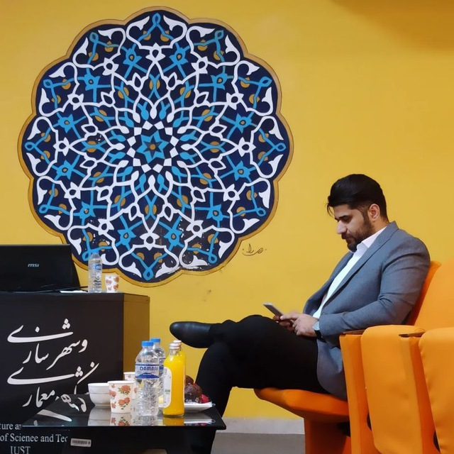

دکتری
دکتری شهرسازی
دانشگاه علم و صنعت ایران
تحصیلات تکمیلی در رشته شهرسازی
وبسایت علمی و حرفهای
پژوهشگر و مدرس حوزه شهرسازی با تمرکز بر عدالت فضایی، برنامهریزی شهری و تحلیل مسائل و سیاستهای شهری.

نگاهی کوتاه به زمینه علمی و حرفهای
رضا مطهر، دانشآموخته دکتری شهرسازی از دانشگاه علم و صنعت ایران، در زمینه برنامهریزی شهری، عدالت فضایی و مطالعات شهری فعالیت علمی و پژوهشی دارد.
زمینههای مورد توجه او شامل تحلیل مسائل شهری، ارزیابی تصمیمها و برنامههای عمومی، گردشگری شهری و بررسی ارتباط میان ساختارهای اجتماعی و فضایی شهر است.
مسیر دانشگاهی
دانشگاه علم و صنعت ایران
تحصیلات تکمیلی در رشته شهرسازی
دانشگاه علم و صنعت ایران
تحصیلات تخصصی در حوزه شهرسازی
دانشگاه لرستان
تحصیلات پایه در رشته مهندسی شهرسازی
فعالیتهای آموزشی در محیط دانشگاه
دانشگاه خوارزمی
فعالیت آموزشی در جایگاه مدرس مدعو دانشگاهی.
دانشگاه علم و صنعت ایران
تجربه همکاری آموزشی در محیط دانشگاهی.
موضوعات مورد توجه در مطالعات شهری
نمونهای از فعالیتهای علمی و پژوهشی
R. Motahar & M. S. Shokouhibidhendi
International Journal for Housing Science and Its Applications, 2026, 47(2), 1–14
R. Motahar, M. S. Shokouhibidhendi & S. A. Daneshpour
وضعیت انتشار مطابق اطلاعات رزومه علمی
جغرافیا و برنامهریزی، ۱۴۰۴
کارفرما: مرکز مطالعات و برنامهریزی شهر تهران
کارفرما: مرکز مطالعات و برنامهریزی شهر تهران
گزیدهای از دستاوردهای ثبتشده در رزومه
دانشگاه علم و صنعت ایران
دانشگاه علم و صنعت ایران
Town Planning Review و Urban Economics and Planning
برای مکاتبات علمی، همکاریهای پژوهشی و ارتباط حرفهای، یکی از راههای زیر را انتخاب کنید.